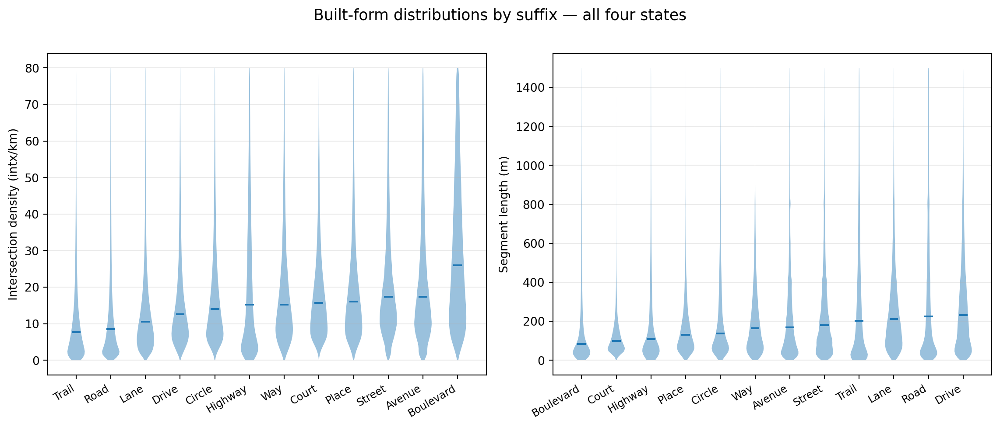
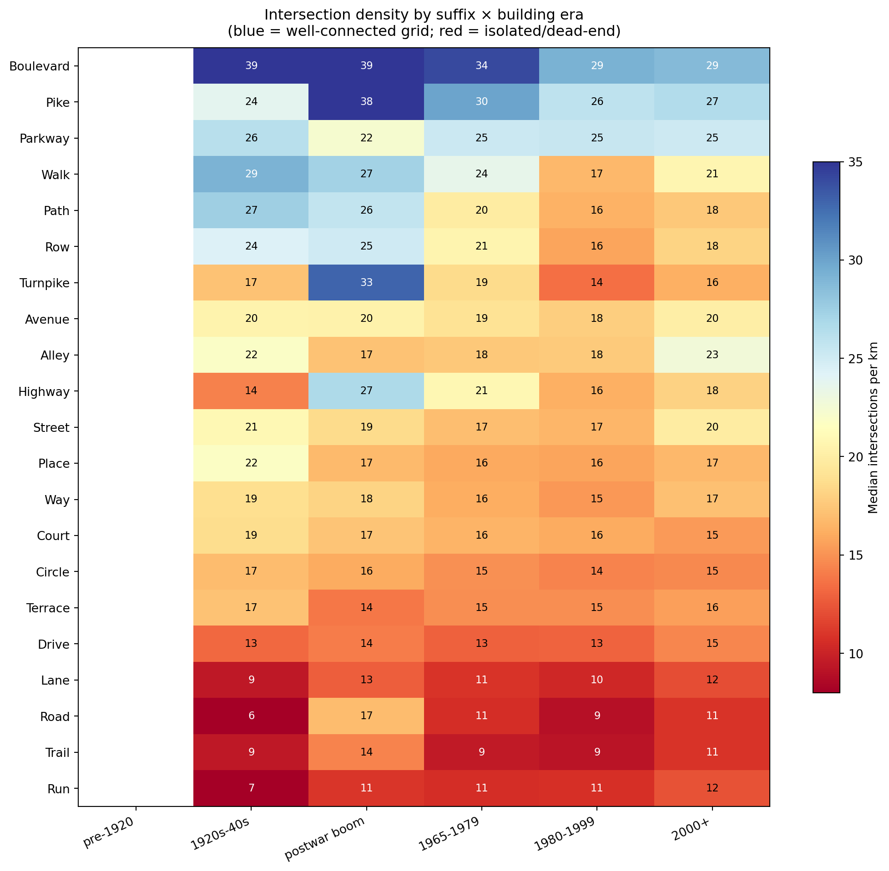
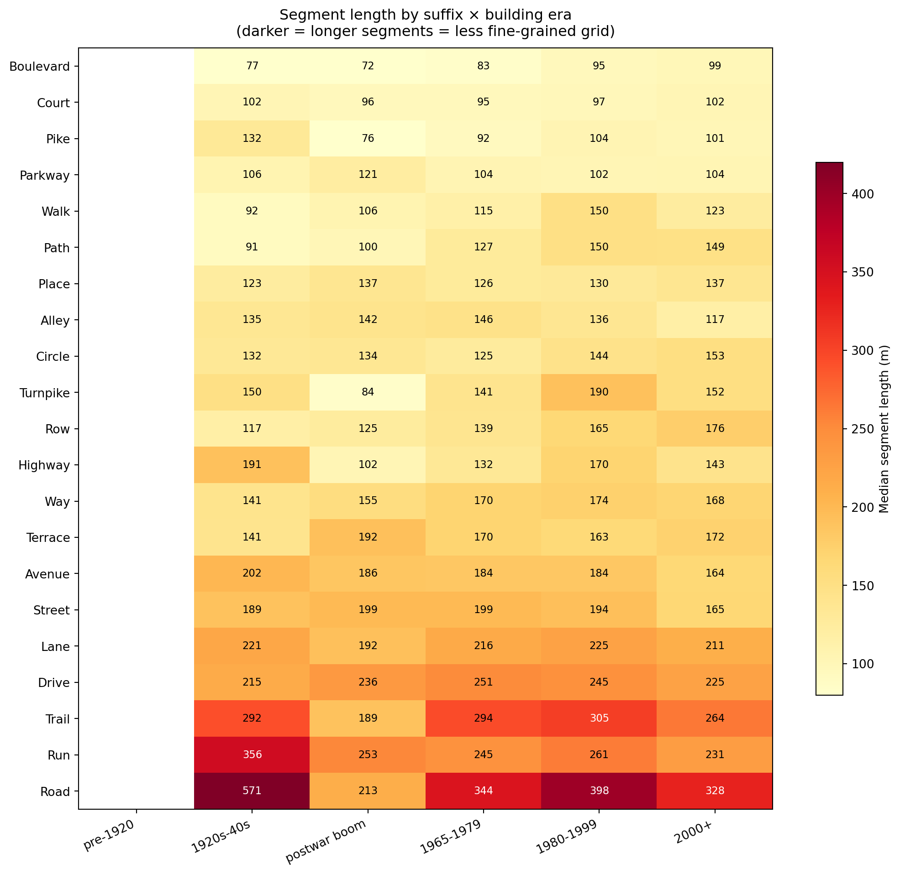
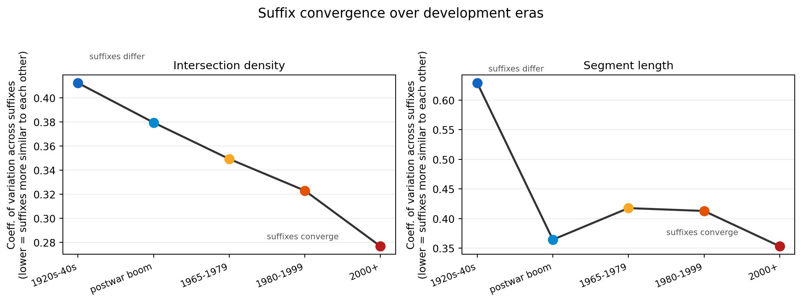
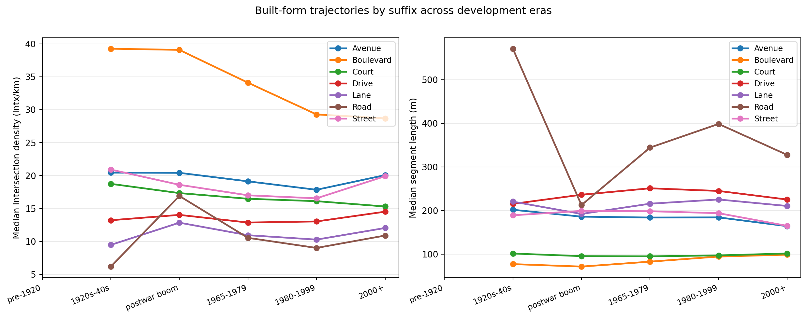
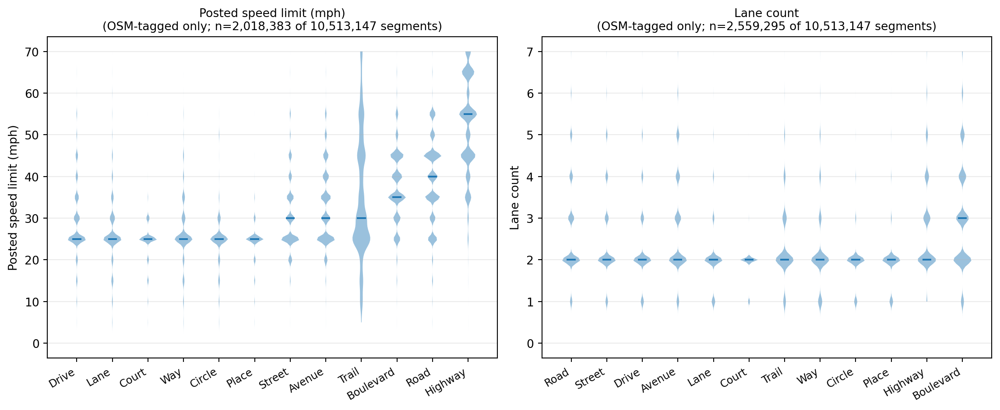
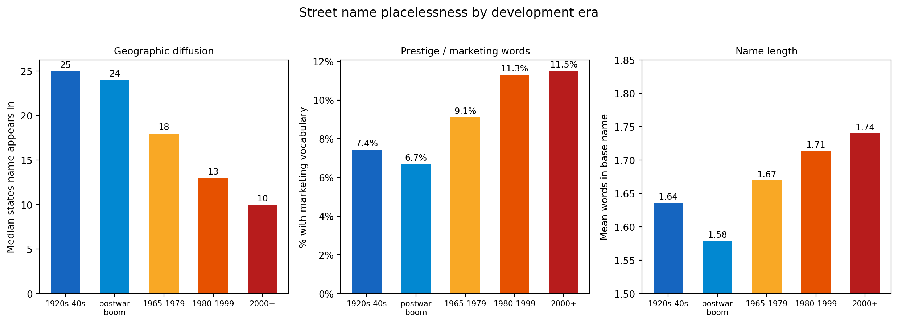

Street suffixes — Road, Court, Boulevard, Lane — once carried typological meaning. A Court was a short cul-de-sac. A Boulevard was a wide, tree-lined arterial with pedestrian amenity. A Road was a rural through-route. The hypothesis here: the post-war suburban development era decoupled suffix from form, repurposing evocative names as marketing vocabulary.
This analysis tests that empirically across four states (Ohio, Kentucky, Rhode Island, Connecticut) using OpenStreetMap road geometry. Rather than relying on sparsely-tagged attributes like speed limits and lane counts — which have no consistent national source — the primary built-form measures are geometric:
Intersection density (intersections per km): high = connected urban grid; low = dead-end, cul-de-sac, or rural through-road
Segment length (meters): short segments = fine-grained grid; long segments = arterial or subdivision collector
These are computed directly from OSM node structure, not from human-added tags, making them consistent across all jurisdictions. Speed limits and lane counts are shown where available as supplementary context.
Each street segment is spatially joined to its surrounding Census block group’s modal development era — the decade when the most housing in that block group was built — from ACS 2022 data. This lets us ask: does a Road in a 1920s neighborhood look different from a Road in a 1980s subdivision?
The collapse: suffixes converging on a single form
Code
# Show that most suffixes are now indistinguishable on core attributestop_suffixes = df["suffix"].value_counts().head(12).index.tolist()sub = df[df["suffix"].isin(top_suffixes)].copy()fig, axes = plt.subplots(1, 2, figsize=(12, 5))for ax, col, label, clip in [ (axes[0], "intersection_density", "Intersection density (intx/km)", 80), (axes[1], "way_length_m", "Segment length (m)", 1500),]: sub_clean = sub[sub[col].notna() & (sub[col] < clip)] order = sub_clean.groupby("suffix")[col].median().reindex(top_suffixes).sort_values().index.tolist() data = [sub_clean.loc[sub_clean["suffix"] == s, col].dropna().values for s in order] vp = ax.violinplot(data, showmedians=True, showextrema=False)for body in vp["bodies"]: body.set_alpha(0.45) ax.set_xticks(range(1, len(order) +1)) ax.set_xticklabels(order, rotation=30, ha="right", fontsize=9) ax.set_ylabel(label) ax.grid(axis="y", alpha=0.25)fig.suptitle("Built-form distributions by suffix — all four states", fontsize=13, y=1.01)plt.tight_layout()plt.show()

The violin plots reveal the core finding: most suffixes are nearly indistinguishable on segment length and connectivity. Court, Drive, Lane, Place, Circle, Way, and Street all cluster in the same range. The only suffixes that remain meaningfully differentiated are those with a functional rather than evocative identity: Road (long segments, low connectivity), Trail (long, low), and Alley (short, dense).
Connectivity across development eras
The most informative dimension is what happens when you break the same suffix down by the era of surrounding development.
Code
profile = pd.read_csv(DATA_PROC /"era_profiles.csv")profile["era"] = pd.Categorical(profile["era"], categories=ERA_ORDER, ordered=True)# Only suffixes with enough coverage across multiple erasera_coverage = profile.groupby("suffix")["era"].count()well_covered = era_coverage[era_coverage >=3].index.tolist()# Intersection density heatmappivot_intx = ( profile[profile["suffix"].isin(well_covered)] .pivot(index="suffix", columns="era", values="intx_density") .reindex(columns=[e for e in ERA_ORDER if e in profile["era"].cat.categories]))row_order = pivot_intx.mean(axis=1).sort_values(ascending=False).indexpivot_intx = pivot_intx.loc[row_order]fig, ax = plt.subplots(figsize=(11, max(5, len(pivot_intx) *0.48)))im = ax.imshow(pivot_intx.values, aspect="auto", cmap="RdYlBu", vmin=8, vmax=35)plt.colorbar(im, ax=ax, label="Median intersections per km", shrink=0.7)ax.set_xticks(range(len(pivot_intx.columns)))ax.set_xticklabels(pivot_intx.columns, rotation=25, ha="right", fontsize=10)ax.set_yticks(range(len(pivot_intx.index)))ax.set_yticklabels(pivot_intx.index, fontsize=10)ax.set_title("Intersection density by suffix × building era\n(blue = well-connected grid; red = isolated/dead-end)", fontsize=12, pad=10)for i inrange(len(pivot_intx.index)):for j inrange(len(pivot_intx.columns)): val = pivot_intx.values[i, j]ifnot np.isnan(val): ax.text(j, i, f"{val:.0f}", ha="center", va="center", fontsize=8.5, color="white"if val >28or val <12else"black")plt.tight_layout()plt.show()

Code
# Segment length heatmappivot_len = ( profile[profile["suffix"].isin(well_covered)] .pivot(index="suffix", columns="era", values="way_length_m") .reindex(columns=[e for e in ERA_ORDER if e in profile["era"].cat.categories]))row_order_l = pivot_len.mean(axis=1).sort_values().indexpivot_len = pivot_len.loc[row_order_l]fig, ax = plt.subplots(figsize=(11, max(5, len(pivot_len) *0.48)))im = ax.imshow(pivot_len.values, aspect="auto", cmap="YlOrRd", vmin=80, vmax=420)plt.colorbar(im, ax=ax, label="Median segment length (m)", shrink=0.7)ax.set_xticks(range(len(pivot_len.columns)))ax.set_xticklabels(pivot_len.columns, rotation=25, ha="right", fontsize=10)ax.set_yticks(range(len(pivot_len.index)))ax.set_yticklabels(pivot_len.index, fontsize=10)ax.set_title("Segment length by suffix × building era\n(darker = longer segments = less fine-grained grid)", fontsize=12, pad=10)for i inrange(len(pivot_len.index)):for j inrange(len(pivot_len.columns)): val = pivot_len.values[i, j]ifnot np.isnan(val): ax.text(j, i, f"{val:.0f}", ha="center", va="center", fontsize=8.5, color="white"if val >300else"black")plt.tight_layout()plt.show()

The convergence story
If suffix names once carried meaningful information about built form, we’d expect high variance across suffixes in older eras (each suffix means something different) and lower variance in newer eras (they’ve all collapsed toward a common form). The coefficient of variation across suffixes — lower = more similar to each other — tests this directly.
Code
conv_rows = []for era in ERA_ORDER: sub_e = profile[profile["era"] == era]iflen(sub_e) <4:continuefor attr, label in [ ("intx_density", "Intersection density"), ("way_length_m", "Segment length"), ]: vals = sub_e[attr].dropna()iflen(vals) <4:continue conv_rows.append({"era": era, "attr": label,"cv": vals.std() / vals.mean(),"iqr": vals.quantile(0.75) - vals.quantile(0.25), })conv = pd.DataFrame(conv_rows)fig, axes = plt.subplots(1, 2, figsize=(11, 4))for ax, attr inzip(axes, ["Intersection density", "Segment length"]): sub_c = conv[conv["attr"] == attr].set_index("era").reindex(ERA_ORDER).dropna() colors = [ERA_COLORS[i] for i, e inenumerate(ERA_ORDER) if e in sub_c.index] ax.plot(range(len(sub_c)), sub_c["cv"].values, marker="o", color="#333", linewidth=2, zorder=3)for i, (cv, c) inenumerate(zip(sub_c["cv"].values, colors)): ax.scatter(i, cv, color=c, s=80, zorder=4) ax.set_xticks(range(len(sub_c))) ax.set_xticklabels(sub_c.index, rotation=22, ha="right", fontsize=9) ax.set_ylabel("Coeff. of variation across suffixes\n(lower = suffixes more similar to each other)") ax.set_title(attr, fontsize=11) ax.grid(axis="y", alpha=0.25)# annotate direction ax.annotate("suffixes differ", xy=(0, sub_c["cv"].values[0]), xytext=(0.15, sub_c["cv"].values[0] +0.02), fontsize=8, color="#555") ax.annotate("suffixes converge", xy=(len(sub_c)-2, sub_c["cv"].values[-2]), xytext=(len(sub_c)-2.5, sub_c["cv"].values[-2] -0.04), fontsize=8, color="#555")fig.suptitle("Suffix convergence over development eras", fontsize=13, y=1.02)plt.tight_layout()plt.show()

Both attributes show the same trajectory: spread across suffixes narrows from the 1920s-40s through the postwar and 1965-1979 eras, bottoming out in the 1980-1999 period — the peak of American auto-oriented sprawl. This is the empirical signature of suffix vocabulary becoming meaningless: by the time a neighborhood is built in the 1980s, whether the developer names a street “Court,” “Lane,” “Drive,” or “Circle” carries almost no information about what that street actually looks like.
Selected suffix trajectories
Code
# Focus on the suffixes with interesting era trajectoriesHIGHLIGHT = ["Boulevard", "Avenue", "Street", "Court", "Road", "Drive", "Lane"]sub_h = profile[profile["suffix"].isin(HIGHLIGHT)].copy()fig, axes = plt.subplots(1, 2, figsize=(13, 5))era_pos = {e: i for i, e inenumerate(ERA_ORDER)}for ax, attr, label in [ (axes[0], "intx_density", "Median intersection density (intx/km)"), (axes[1], "way_length_m", "Median segment length (m)"),]:for suffix, grp in sub_h.groupby("suffix"): grp = grp.sort_values("era") eras_present = [e for e in ERA_ORDER if e in grp["era"].values] vals = grp.set_index("era").reindex(ERA_ORDER)[attr].dropna() x = [era_pos[e] for e in vals.index] ax.plot(x, vals.values, marker="o", label=suffix, linewidth=2) ax.set_xticks(range(len(ERA_ORDER))) ax.set_xticklabels(ERA_ORDER, rotation=22, ha="right", fontsize=9) ax.set_ylabel(label) ax.legend(fontsize=9, loc="upper right") ax.grid(axis="y", alpha=0.25)fig.suptitle("Built-form trajectories by suffix across development eras", fontsize=12, y=1.01)plt.tight_layout()plt.show()

Speed and lane counts (supplementary)
Speed limits and lane counts are included where OSM contributors have tagged them, but coverage is sparse — particularly on residential streets, which is precisely where the suffix-meaning question is most interesting. No consistent national source exists for local road attributes. These figures should be read as directional rather than comprehensive.
Code
fig, axes = plt.subplots(1, 2, figsize=(12, 5))for ax, col, label, clip in [ (axes[0], "maxspeed", "Posted speed limit (mph)", 75), (axes[1], "lanes", "Lane count", 8),]: sub_attr = df[df["suffix"].isin(top_suffixes) & df[col].notna() & (df[col] < clip)]iflen(sub_attr) <100: ax.text(0.5, 0.5, f"Insufficient tag coverage\nfor {label}", ha="center", va="center", transform=ax.transAxes, fontsize=11, color="#888") ax.set_title(label)continue order = sub_attr.groupby("suffix")[col].median().reindex(top_suffixes).sort_values().dropna().index.tolist() data = [sub_attr.loc[sub_attr["suffix"] == s, col].dropna().values for s in order] vp = ax.violinplot(data, showmedians=True, showextrema=False)for body in vp["bodies"]: body.set_alpha(0.45) ax.set_xticks(range(1, len(order) +1)) ax.set_xticklabels(order, rotation=30, ha="right", fontsize=9) ax.set_ylabel(label) ax.grid(axis="y", alpha=0.25) n_tagged = sub_attr["suffix"].value_counts().reindex(order).fillna(0) ax.set_title(f"{label}\n(OSM-tagged only; n={len(sub_attr):,} of {df['suffix'].isin(order).sum():,} segments)", fontsize=10)plt.tight_layout()plt.show()

What’s in the name itself?
The suffix analysis above measures form. This section asks a different question: do the names themselves — stripped of their suffix — encode local meaning, or have they become as generic as the streets they label?
Three lenses on placelessness, computed across all 12.8 million named ways nationally:
Code
import reERA_ORDER_NAME = ["1920s-40s", "postwar boom", "1965-1979", "1980-1999", "2000+"]nm = pd.read_parquet(DATA_PROC /"name_analysis.parquet")nm = nm[nm["era"].isin(ERA_ORDER_NAME)]era_stats = nm.groupby("era").agg( n=("base", "count"), median_diffusion=("n_states", "median"), mean_diffusion=("n_states", "mean"), prestige_pct=("has_prestige", "mean"), nature_compound_pct=("is_nature_compound", "mean"), mean_tokens=("token_count", "mean"),).reindex(ERA_ORDER_NAME)fig, axes = plt.subplots(1, 3, figsize=(13, 4.5))fig.suptitle("Street name placelessness by development era", fontsize=13, y=1.02)x = np.arange(len(ERA_ORDER_NAME))w =0.6era_labels = [e.replace("postwar boom", "postwar\nboom") for e in ERA_ORDER_NAME]colors = ["#1565c0", "#0288d1", "#f9a825", "#e65100", "#b71c1c"]# 1. Geographic diffusionax = axes[0]vals = era_stats["median_diffusion"].valuesbars = ax.bar(x, vals, width=w, color=colors)ax.set_xticks(x); ax.set_xticklabels(era_labels, fontsize=8)ax.set_ylabel("Median states name appears in")ax.set_title("Geographic diffusion", fontsize=10)for bar, v inzip(bars, vals): ax.text(bar.get_x() + bar.get_width()/2, v +0.2, f"{v:.0f}", ha="center", va="bottom", fontsize=9)# 2. Prestige / marketing vocabularyax = axes[1]vals2 = era_stats["prestige_pct"].values *100bars2 = ax.bar(x, vals2, width=w, color=colors)ax.set_xticks(x); ax.set_xticklabels(era_labels, fontsize=8)ax.set_ylabel("% with marketing vocabulary")ax.set_title("Prestige / marketing words", fontsize=10)ax.yaxis.set_major_formatter(mticker.FormatStrFormatter('%.0f%%'))for bar, v inzip(bars2, vals2): ax.text(bar.get_x() + bar.get_width()/2, v +0.1, f"{v:.1f}%", ha="center", va="bottom", fontsize=9)# 3. Token countax = axes[2]vals3 = era_stats["mean_tokens"].valuesbars3 = ax.bar(x, vals3, width=w, color=colors)ax.set_xticks(x); ax.set_xticklabels(era_labels, fontsize=8)ax.set_ylabel("Mean words in base name")ax.set_title("Name length", fontsize=10)ax.set_ylim(1.5, 1.85)for bar, v inzip(bars3, vals3): ax.text(bar.get_x() + bar.get_width()/2, v +0.002, f"{v:.2f}", ha="center", va="bottom", fontsize=9)plt.tight_layout()plt.show()

Geographic diffusion (left) measures how many states each base name appears in nationally — a proxy for genericness. The median drops from 25 states in 1920s-40s neighborhoods to 10 states in 2000+ neighborhoods. This sounds like new streets are more locally unique, but the top-name tables tell the real story: 1920s-40s streets are named after people (Washington, Lincoln) and the grid (2nd, 3rd, 4th) — genuinely national in the sense of shared civic vocabulary. Post-1980 streets have low diffusion because developer-coined compound names (“Whispering Pines,” “Sugar Creek”) are unique by construction, not because they reference anything local.
Marketing vocabulary (center) — words like Estates, Manor, Pointe, Reserve, Ridge, Glen, Springs — rises from 7.4% to 11.5% of street names across eras. The 1965-1979 generation is the inflection point, the first suburban wave to fully adopt pastoral branding as a development strategy.
Name length (right) is the subtlest signal but directionally consistent: base names grow from 1.64 to 1.74 words on average. Pre-war streets are mostly monosyllabic (Elm, Main, Oak). Suburban streets pile on modifiers (Shady Valley, Pleasant Ridge, Sugar Creek) to evoke a landscape that development has often replaced.
Code
# Top names per era — show the vocabulary shiftprint("Most common base names by era (★ = contains marketing/nature vocabulary)\n")PRESTIGE = {"ESTATES","ESTATE","MANOR","POINTE","GRANDE","GRAND","ROYAL","IMPERIAL","RESERVE","PRESERVE","ENCLAVE","COMMONS","CROSSING","LANDING","HAVEN","RETREAT","SANCTUARY","GATEWAY","OVERLOOK","VISTA","GLEN","CHASE","RUN","HOLLOW","VALE","CREST","BLUFF","MEADOW","MEADOWS","BROOK","CREEK","SPRINGS","SPRING","FALLS","LAKE","LAKES","POND","PINES","PINE","OAK","OAKS","ELM","MAPLE","CEDAR","WILLOW","BIRCH","ASH","HICKORY","WALNUT","CHESTNUT","SYCAMORE","MAGNOLIA","DOGWOOD","LAUREL","IVY","FERN","HEATHER","CLOVER","BRIAR","RIDGE","SUMMIT","HILLS","HILL","VALE",}for era in ERA_ORDER_NAME: sub = nm[nm["era"] == era] top = sub.groupby("base").agg(n=("base","count"), states=("n_states","first")).nlargest(8,"n")print(f"── {era} ──")for base, row in top.iterrows(): flag ="★"ifbool(set(base.split()) & PRESTIGE) else" "print(f" {flag}{base:<28} n={row['n']:>6,} ({row['states']:.0f} states)")print()
Most common base names by era (★ = contains marketing/nature vocabulary)
── 1920s-40s ──
MAIN n=14,490 (50 states)
PARK n= 6,795 (50 states)
WASHINGTON n= 6,139 (49 states)
★ MAPLE n= 5,438 (49 states)
2ND n= 5,375 (50 states)
3RD n= 5,252 (50 states)
1ST n= 5,022 (50 states)
4TH n= 4,627 (50 states)
── postwar boom ──
MAIN n= 2,958 (50 states)
PARK n= 2,460 (50 states)
WASHINGTON n= 2,114 (49 states)
★ MAPLE n= 1,749 (49 states)
★ OAK n= 1,676 (48 states)
LINCOLN n= 1,675 (50 states)
★ ELM n= 1,398 (50 states)
CENTRAL n= 1,358 (49 states)
── 1965-1979 ──
MAIN n= 6,514 (50 states)
PARK n= 4,441 (50 states)
★ OAK n= 3,683 (48 states)
WASHINGTON n= 3,622 (49 states)
★ MAPLE n= 3,412 (49 states)
★ PINE n= 3,029 (50 states)
2ND n= 2,964 (50 states)
★ CEDAR n= 2,908 (50 states)
── 1980-1999 ──
MAIN n= 6,685 (50 states)
PARK n= 3,744 (50 states)
★ OAK n= 3,344 (48 states)
RIVER n= 3,060 (50 states)
★ PINE n= 2,983 (50 states)
WASHINGTON n= 2,981 (49 states)
★ CEDAR n= 2,873 (50 states)
★ MAPLE n= 2,857 (49 states)
── 2000+ ──
MAIN n= 5,644 (50 states)
PARK n= 2,901 (50 states)
WASHINGTON n= 2,606 (49 states)
RIVER n= 2,238 (50 states)
★ OAK n= 2,221 (48 states)
★ PINE n= 1,999 (50 states)
AIRPORT n= 1,962 (49 states)
★ MAPLE n= 1,952 (49 states)
The top-name tables make the story concrete. In 1920s-40s neighborhoods, the most common names are Main, Park, Washington, 2nd, 3rd, 4th — a civic vocabulary of grid coordinates and national honorifics. By 1980-1999, the ordinal grid recedes and nature words dominate: Oak, Pine, Cedar, Maple, River. These names appear in 48-50 states — not locally referential, just generically pastoral.
Key findings
1. Most street suffixes have collapsed to a single built form. Court, Drive, Lane, Place, Circle, Way, and Street are statistically indistinguishable on intersection density and segment length in the four-state sample. The suffix carries no predictive information about what the street looks like.
2. The collapse is concentrated in the postwar and 1965–1999 development eras. Spread across suffixes is highest in 1920s-40s neighborhoods — where Court genuinely meant something different from Avenue — and narrows sharply through the postwar boom and 1965-1979 period, reaching its minimum in 1980-1999 neighborhoods. This is the empirical signature of suburban marketing vocabulary overwriting functional typology.
3. A small set of suffixes retain typological identity. - Road — consistently long segments, low connectivity, across all eras. Remains the most honest suffix. - Trail — long segments, low connectivity, especially in older eras where it often describes repurposed rural routes. - Alley — short, dense, structurally distinct regardless of era. - Boulevard — shows the most dramatic drift: high connectivity in pre-war neighborhoods (where it often genuinely described a wide arterial), dropping to generic suburban collector in postwar and 1965-1979 development, partially recovering in 2000+ contexts.
4. Avenue and Street show a U-curve in connectivity. Both are at their most connected in 1920s-40s grids (~22-23 intx/km), collapse to minimum connectivity in the 1965-1979 era (~17-18 intx/km), then partially recover in 2000+ development. This mirrors the broader arc of American urban design: grid → cul-de-sac → partial reconnection.
5. Street names shifted from civic vocabulary to invented pastoral. Pre-war neighborhoods are named after people (Washington, Lincoln) and the grid (2nd, 3rd, Main) — a shared national civic vocabulary. Post-1965 development adopts nature words (Oak, Pine, Cedar, Maple) that appear in 48-50 states, followed by developer-coined compounds (Sugar Creek, Shady Valley, Whispering Pines) that are unique by construction but locally meaningless. Marketing vocabulary share rises from 7.4% to 11.5% across eras. The street name has become a branding decision, not a local memory.
Caveats
Geographic scope: All 50 states, ~50M street ways. OSM coverage is denser in urban areas and the Northeast; rural and Western states may be underrepresented in residential street data.
Speed/lanes: OSM tag coverage is too sparse for reliable national analysis. No consistent local-road dataset exists nationally.
Era assignment: Based on modal decade of housing construction in the Census block group — a neighborhood-level proxy, not parcel-level build date. Streets in mixed-vintage neighborhoods may be misclassified.
OSM intersection density: Counts any shared node between highway ways, including driveways and minor service connections. Filtering to named intersections only would give cleaner numbers.